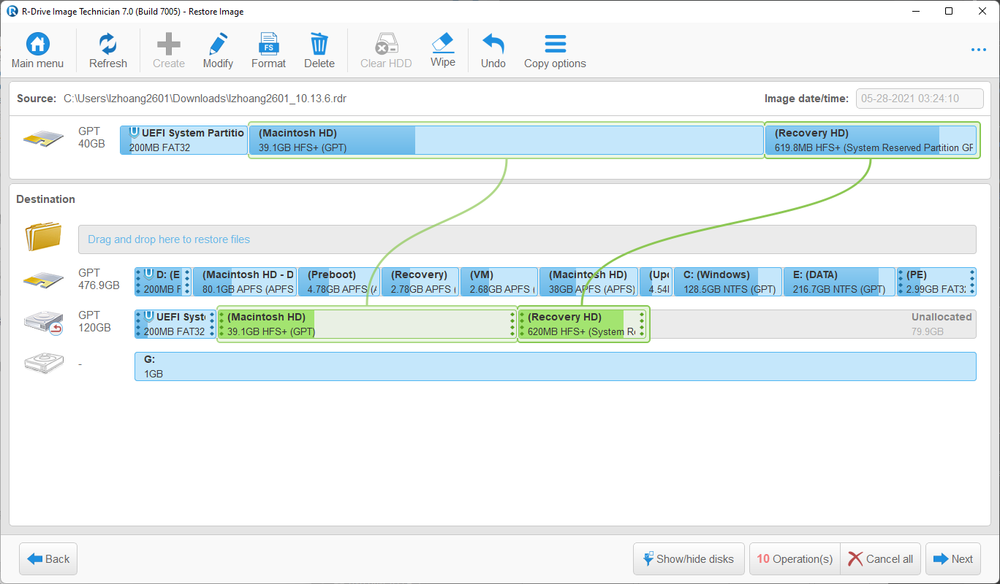

Việc cài đặt macOS phổ biến thông qua một chiếc USB, có thể sử dụng full installer để cài đặt không cần kết nối mạng hoặc sử dụng recoveryOS để tải bộ cài trực tiếp từ nguồn Apple chỉ dùng một lần.
Vấn đề gặp phải với cách dùng USB này là rất nhiều cho nên trong bài viết này mình sẽ hướng dẫn một cách nhanh chóng, an toàn hơn và việc bạn cần làm chỉ là chuẩn bị một EFI phù hợp với cấu hình
Với những ai vọc vạch Windows thì restore hay ghost rất quen thuộc và bây giờ chúng ta sẽ sử dụng với macOS thay vì Windows, với hỗ trợ của ứng dụng R-Drive Image cùng với những bản restore macOS được tạo sẵn hoàn toàn sạch được tạo bởi mình
Chuẩn bị:
1. Môi trường windows
2. EFI đã tạo từ những bài viết trước
3. Bản restore macOS bạn cần (
macOS Monterey,
macOS Big Sur,
macOS Catalina,
macOS Mojave,
macOS High Sierra)
4. Ứng dụng R-Drive Image, MiniTool Partition Wizard, EasyUEFI, Explorer++ bạn có thể tải tại đây
Lưu ý: Tốt nhất hãy chuẩn bị môi trường WindowsPE trước khi bắt đầu để tránh gặp vấn đề không may
Mình sẽ hướng dẫn cài đặt chỉ macOS và song song với Windows luôn cho các bạn
Windows và dữ liệu hiện tại hoàn toàn không ảnh hưởng nếu làm đúng theo hướng dẫn, ai cẩn thận có thể backup trước khi làm
Các bước:
1. Cài đặt WindowsPE
2. Chuẩn bị phân vùng cài macOS song song với Windows
3. Restore macOS lên ổ cứng
4. Thêm OpenCore vào ổ cứng
Một vài bước nhỏ: Rebuild EFI Windows, Xoá sạch Windows
Lưu ý với macOS High Sierra
Bước 1.Chuẩn bị môi trường Windows
Với những bạn cài riêng macOS lên một ổ cứng khác có thể bỏ qua bước này và làm trực tiếp trên Windows
Bạn có thể sử dụng bất kì bản WindowsPE nào bạn có thể tìm thấy nhưng ở đây mình sẽ ví dụ với Anhdv Boot. Các bạn có thể tải bản Free hoặc mua bản Premium để ủng hộ tác giả tại đây
Sau khi tải về bạn sẽ nhận được một file .ISO chứa WindowsPE
Mình thích cài WindowsPE lên ổ cứng luôn vì có tốc độ nhanh nhưng với những máy có BIOS luôn luôn ưu tiên Windows Boot Manager thì nên sử dụng USB để tránh rủi ro
A. Cài đặt WindowsPE lên USB (Khuyến khích)
Bạn cần USB tổi thiểu với dung lượng của file .ISO trên và nên backup nếu có dữ liệu quan trọng trong USB để tiếp tục
Cắm USB vào rồi mở ứng dụng MiniTool Partition Wizard hoặc bất kì phần mềm nào có chức năng tương tự mà bạn quen sử dụng
Nhấp chuột phải vào USB, chọn Delete All Partitions
Nếu USB ở đang ở dạng GPT, nhấp chuột phải vào USB chọn Convert GPT Disk to MBR Disk
Nhấp chuột phải vào phần Unallocated ở USB chọn Create
Bạn chỉ cần chú ý đặt File System là FAT32
Ấn OK và Apply để tiến hành phân vùng
Sau khi phân vùng xong bạn chỉ cần giải nén file .ISO đã chuẩn bị ở trên vào USB và không để trong folder mẹ ở USB là hoàn tất
Để khởi động WindowsPE bạn chỉ việc mở Boot Menu/BIOS và chọn vào tên USB ở phần Boot Option
B. Cài đặt WindowsPE lên ổ cứng hoặc chỉ 1 phân vùng nhỏ trên USB
Mở ứng dụng MiniTool Partition Wizard hoặc bất kì phần mềm nào có chức năng tương tự mà bạn quen sử dụng
Tạo thêm một phân vùng tối thiểu với dung lượng của file .ISO trên từ bất kì phân vùng có sẵn nào
Với những bạn chỉ có phân vùng Windows hãy cẩn thận cho việc tách phân vùng này
Bạn nhấp chuột phải vào phân vùng vừa tạo, chọn Format, chú ý đặt File System là FAT32
Ấn OK và Apply để tiến hành phân vùng
Sau khi phân vùng xong bạn chỉ cần giải nén file .ISO đã chuẩn bị ở trên vào phân vùng vừa tạo và không để trong folder mẹ ở phân vùng vừa tạo
Các bạn có thể dừng lại ở đây vì BIOS sẽ tự thêm Boot Option với tên ổ cứng/USB và vị trí của phân vùng vừa tạo
Bạn nào cần thêm chắc chắn, mở ứng dụng EasyUEFI
Chọn Manager EFI Boot Option, nếu bạn không thể thiết lập ở đây bạn cần làm trực tiếp trên BIOS, các bạn tìm kiếm thêm trên Google nhé
Nếu bạn được thiết lập, chọn Create a new entry
Chọn Linux or other OS ở Type
Description có thể là WindowsPE hoặc bất kì tên nào bạn muốn
Chọn đúng vào phân vùng vừa tạo
Ấn Browser ở File path và tìm tới đường dẫn \EFI\BOOT\BOOTX64.EFI
Nhấn OK là hoàn tất
Bước 2. Chuẩn bị phân vùng cài macOS song song với Windows
Với những bạn cài riêng macOS lên một ổ cứng khác hãy bỏ qua bước này
Chỉ nên làm ở trên WindowsPE
Nếu Windows của bạn vẫn là Legacy và ổ cứng MBR thì hãy chuyển sang UEFI và ổ cứng GPT trước khi tiếp tục
Hãy dọn dẹp phân vùng Windows nếu phân vùng không đủ trống tối thiểu 60GB, nếu bạn có thêm phân vùng khác hãy bỏ qua
Mở ứng dụng MiniTool Partition Wizard hoặc bất kì phần mềm nào có chức năng tương tự mà bạn quen sử dụng
Bạn cần tách ra một phân vùng với dung lượng bạn muốn xài cho macOS, mình sẽ chuột phải chọn Split cho nhanh
Nhấp chuột phải vào phân vùng vừa được tách, chọn Delete
Bạn nên để phân vùng Windows và phân vùng chứa dữ liệu nếu có về phía bên phải còn bên trái lần lượt là phân vùng EFI và phân vùng macOS
Để dồn phân vùng Windows và phân vùng chứa dữ liệu, bạn lần lượt nhấp chuột phải vào từng phân vùng chọn Move/Resize rồi kéo hết sang phía phải
Bây giờ sẽ cần tạo EFI với dung lượng tối thiểu là 200MB, bằng cách nhấp chuột phải vào phân vùng EFI chọn Delete
Nhấp chuột phải vào phân vùng Unallocated chọn Create
Chú ý đặt File System là FAT32
Partition Label nhập EFI hoặc bất kì tên nào bạn muốn
Chỗ Partition Size nhập tối thiểu 200MB rồi chọn OK
Nhấp chuột phải vào phân vùng EFI, chọn Change Partition Type ID (Bạn có thể bỏ qua nhưng phân vùng sẽ luôn luôn không bị ẩn khi khởi động bên Windows và bên macOS bạn sẽ không thể mount EFI bằng Hackintool/..., nó sẽ hiện sẵn hoặc mất tích)
Chọn EFI System Partition, OK và Apply để tiến hành phân vùng
Rebuild EFI Windows
Mở ứng dụng EasyUEFI
Chọn Manager EFI System Partition tiếp đến Rebuild EFI System Partition
Chọn ổ cứng chứ phân vùng Windows
Chọn tiếp vào phân vùng EFI và phân vùng Windows rồi ấn Rebuild
Có thể các bạn sẽ gặp lỗi không thể rebuild EFI cho Windows được nhưng đừng vội nghĩ hết cách để cứu Windows cũ, tạm bỏ qua rồi thử lại sau hoặc liên hệ tới mình
Rebuild thành công, quay về Home
Chọn Manager EFI Boot Option và Create a new entry
Nếu có sẵn Boot Option Windows Boot Manager bạn hãy xoá hết trước nhé
Sau đó chọn Create a new entry
Chọn đúng phân vùng EFI vừa tạo rồi nhấn OK
Cho option lên trên cùng nếu bạn muốn máy tự động vào Windows
Bước 3. Restore macOS lên ổ cứng
Mở ứng dụng R-Drive Image
Chọn Restore Image
Mở file .rdr để restore macOS đã chuẩn bị ở trên
Ấn Next
Với những bạn cài riêng macOS lên một ổ cứng khác
Chọn ổ cứng ở Source và ổ cứng cần cài lên ở Destination
Còn với trường hợp chỉ có một ổ cứng chạy dualboot
Phần Source chọn Macintosh HD và phần vùng trống được tạo ở bước 2 ở Destination
Ấn Next và Start rồi chờ là hoàn thành
Sẽ có một phân vùng Unallocated, vào macOS xài Disk Utility
Bước 4. Thêm OpenCore vào ổ cứng
Những ai thao tác trên Windows sẽ cần sử dụng thêm ứng dụng Explorer++ để truy cập phân vùng EFI
Mở ứng dụng MiniTool Partition Wizard hoặc bất kì phần mềm nào có chức năng tương tự mà bạn quen sử dụng
Nhấp chuột phải vào phân vùng EFI 200MB hoặc lớn hơn, chọn Change Letter
Ấn OK và Apply để mount EFI
Copy folder EFI đã chuẩn bị từ bài viết trước vào phân vùng EFI, nếu cài riêng macOS lên một ổ cứng khác
Còn với chỉ một ổ cứng chạy dualboot, bạn chỉ copy folder \EFI\OC đã chuẩn bị từ bài viết trước vào folder EFI có sẵn trong phân vùng EFI
Mở ứng dụng EasyUEFI
Chọn Manager EFI Boot Option, nếu bạn không thể thiết lập ở đây bạn cần làm trực tiếp trên BIOS, các bạn tìm kiếm thêm trên Google nhé
Nếu bạn được thiết lập, chọn Create a new entry
Chọn Linux or other OS ở Type
Description có thể là OpenCore hoặc bất kì tên nào bạn muốn
Chọn đúng vào phân vùng EFI trên
Ấn Browser ở File path và tìm tới đường dẫn \EFI\OC\OpenCore.efi
Nhấn OK là hoàn tất
Cho option OpenCore lên trên để máy bạn cho phép chọn giữa Windows và macOS lúc khởi động
Nếu chọn vào Windows mà xuất hiện lỗi thì hãy khởi động Windows qua Boot Menu/BIOS
Xoá sạch Windows
Những ai thao tác trên Windows sẽ cần sử dụng thêm ứng dụng Explorer++ để truy cập phân vùng EFI
Mở ứng dụng MiniTool Partition Wizard
Với những bạn cài riêng macOS lên một ổ cứng khác
Nhấp chuột phải vào phân vùng EFI 100MB
Còn với chỉ một ổ cứng chạy dualboot, bạn nhấp chuột phải vào phân vùng EFI đã tạo ở trên
Chọn Change Letter
Ấn OK và Apply để mount EFI
Vào phân vùng EFI xoá đi folder EFI/Microsoft là hoàn tất
Nhấp chuột phải vào phân vùng Windows, chọn Format
Ấn OK và Apply để xoá phân vùng Windows
Bản restore macOS High Sierra
Với macOS bạn cần chọn cả 2 phân vùng như hình

Bản macOS này đã cài sẵn NVIDIA WebDriver cho những bạn xài card NVIDIA dòng Maxwell và Pascal
Nếu khởi động vào không thấy nhận card rời, kiểm tra phần boot-args trong config.plist xem có nvda_drv_vrl=1 chưa nhé
Mật khẩu login là: 1111
Thiết lập BIOS
Trong BIOS của mỗi máy sẽ có chút khác biệt, nếu có tương tự hãy chỉnh còn không có cứ bỏ qua
Disable
- Fast Boot
- Secure Boot
- Serial/COM Port
- Parallel Port
- VT-d
- CSM
- Thunderbolt
- Intel SGX
- Intel Platform Trust
- CFG Lock
Enable
- VT-x
- Above 4G decoding
- Hyper-Threading
- Execute Disable Bit
- EHCI/XHCI Hand-off
- OS type: Windows 8.1/10 UEFI Mode
- Integrated Graphics: Enabled
- DVMT Pre-Allocated(iGPU Memory): 64MB
- SATA Mode: AHCI
Thiết lập xong rồi bạn khởi động vào Macintosh HD, nếu gặp lỗi hãy đăng lên group Hackintosh Vietnam hoặc liên hệ với mình kèm file .json ( sẽ có khi giải nén file EFI .zip bạn tải về ) cùng hình ảnh màn hình stuck/panic để được hỗ trợ